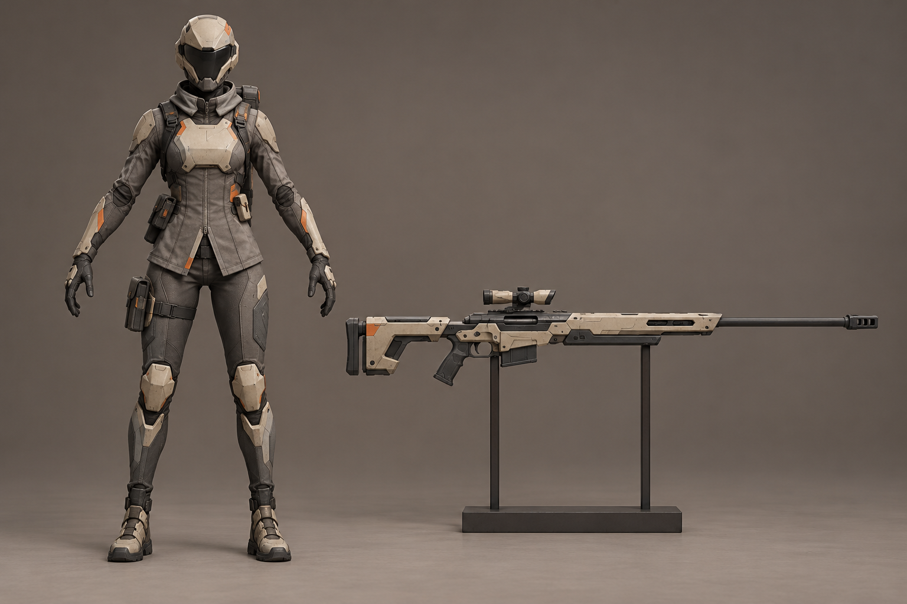
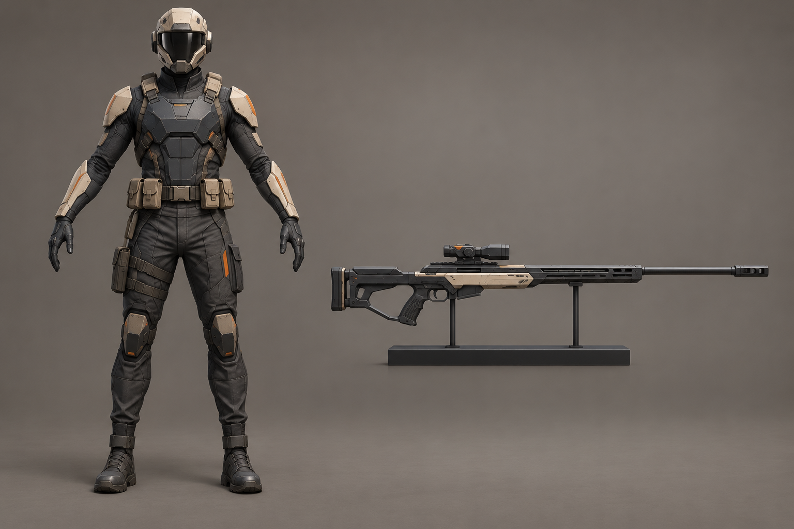
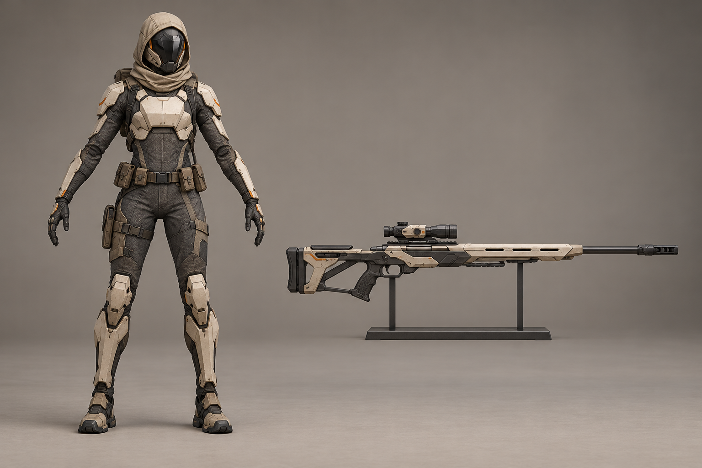
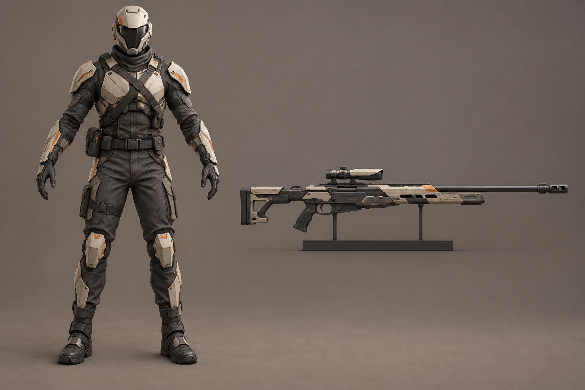
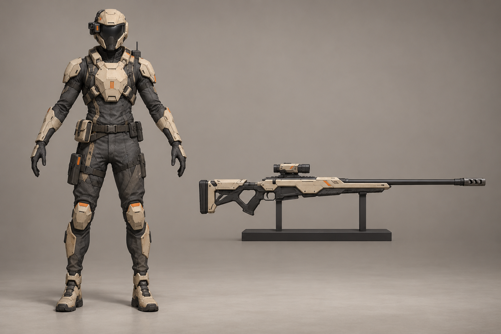
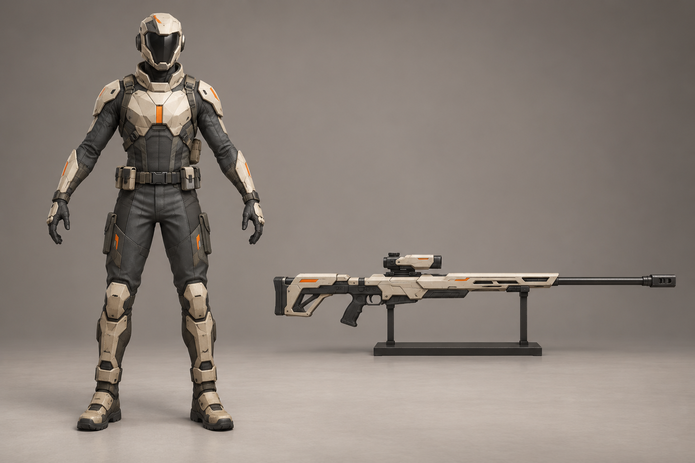
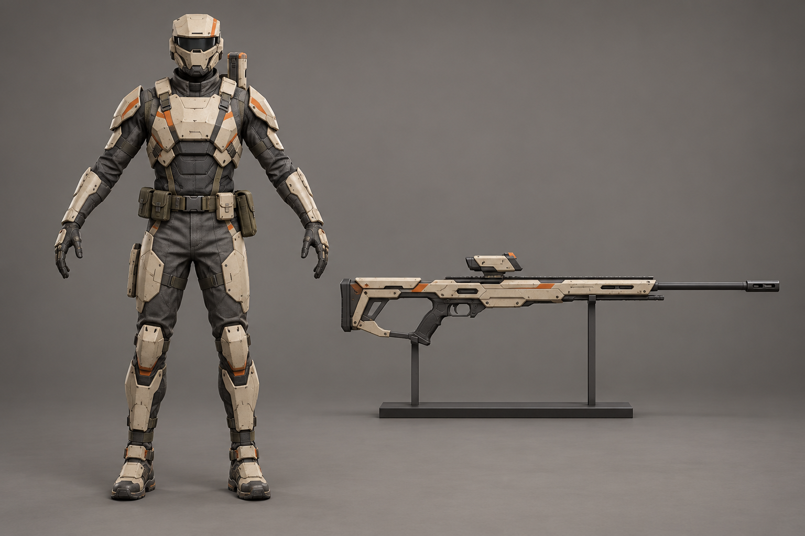
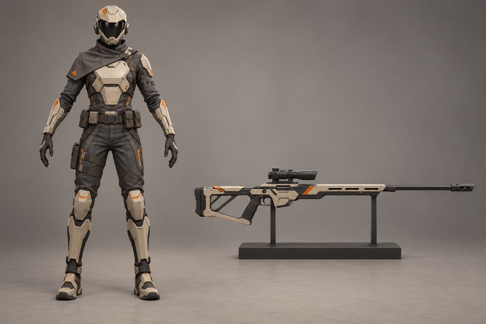

A «Дальний дозор»Короткая раздельная полевая куртка, узкий визор и строгая длинная винтовка.Крупно · Промпт · Не выбран
B «Тень»Тёмная ткань и броня с небольшими светлыми вставками, низкий силуэт шлема.Крупно · Промпт · Не выбран
C «Капюшон»Короткий капюшон поверх шлема и облегчённая разгрузка.Крупно · Промпт · Не выбран
D «Полевой»Больше ткани и ремней, лёгкие пластины и практичная винтовка.Крупно · Промпт · Не выбран
E «Прицел»Смещённая оптика шлема и светлая узкая грудная пластина.Крупно · Промпт · Не выбран
F «Керамика»Крупные светлые поверхности плеч и груди на тёмном костюме.Крупно · Промпт · Не выбран
G «Горизонт»Плоская линия шлема, компактный задний прибор и открытые тканевые суставы.Крупно · Промпт · Не выбран
H «Разрез»Короткая асимметричная накидка на одно плечо и тонкая броня.Крупно · Промпт · Не выбран